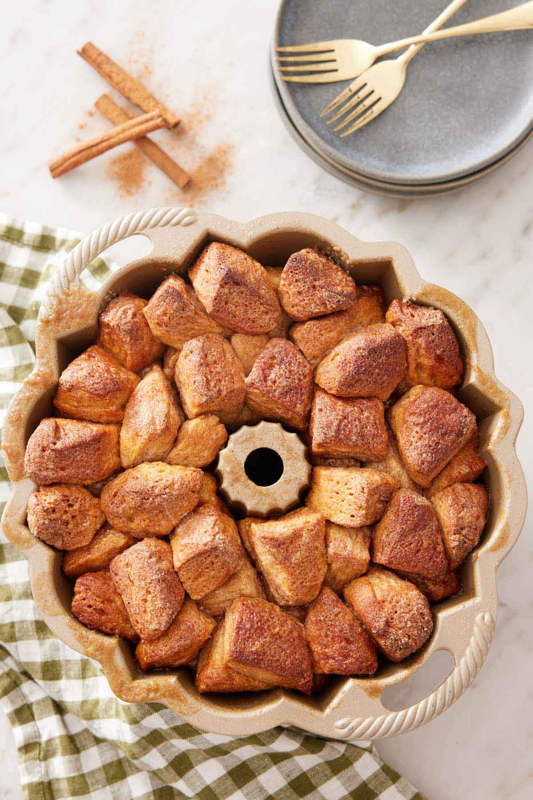

Nachos

Discription
Monkey bread is a sweet, pull-apart pastry made from bite-sized dough
pieces coated in cinnamon sugar and baked together in a bundt pan.
The result is a gooey, caramelized treat that is perfect for breakfast
or dessert. Traditionally, monkey bread is made using pre-made biscuit dough, but homemade dough can also be used for a richer flavor. Once baked, the bread is often drizzled with a glaze or icing to enhance its sweetness.
The origins of monkey bread can be traced back to
Hungarian pull-apart breads, which were later popularized
in the United States in the mid-20th century. The name "monkey bread"
is believed to come from the way people eat it—by pulling apart pieces
with their fingers, similar to how monkeys pick at food. It is commonly
served at holiday gatherings and family brunches, as its fun, shareable
nature makes it a crowd favorite.
This is HANDS DOWN the best Monkey Bread you will
ever find :)
Ingredients
- 1 cup white sugar
- 2 teaspoons ground cinnamon
- 3 (12 ounce) packages refrigerated biscuit dough
- ½ cup chopped walnuts (Optional)
- ½ cup raisins (Optional)
- ½ cup butter or margarine
- 1 cup packed brown sugar
Steps
- Gather all ingredients. Preheat the oven to 350 degrees F (175 degrees C). Grease a 9- or 10-inch tube or Bundt pan.
- Mix white sugar and cinnamon in a plastic bag. Cut biscuits into quarters. Shake 6 to 8 biscuit pieces in the sugar-cinnamon mix.
- Arrange pieces in the bottom of the prepared pan. Continue until all biscuits are coated and placed in the pan. If using walnuts and raisins, arrange in and among the biscuit pieces as you go along.
- Melt butter and brown sugar in a small saucepan over medium heat. Boil for 1 minute; pour over biscuits.
- Bake bread in the preheated oven for 35 minutes; let cool in the pan for 10 minutes, then turn out onto a plate and let everyone pull it apart.